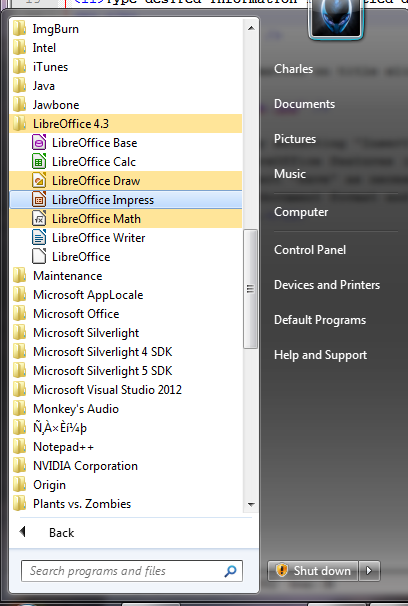
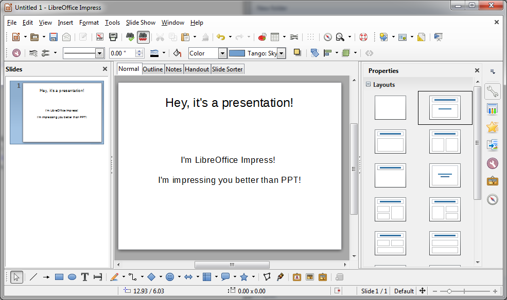
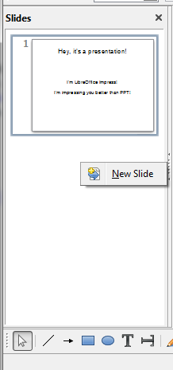
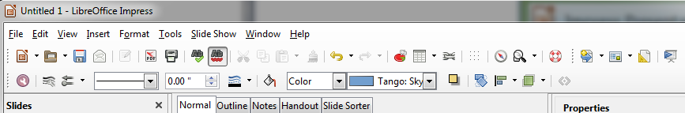

<article data-hd-class="task"> 
<h1>{{ page.title }}</h1> 
<p>Using LibreOffice Impress to create presentation instead of PPT.</p> 

<section data-hd-class="task/steps-informal"> 
<h2>Steps</h2>
<ol> 
<li>Open the LibreOffice Impress from the start menu.</li>
<p> </p>

<p> </p>
<li>Create your presentation.</li>
<p> </p>

<p> </p>
<li>Right click on the slides window to insert a new slid.</li>
<p> </p>

<p> </p>
<li>Make your presentation looks better with LibreOffice tools.</li>
<p> </p>

<p> </p>
<li>Under File menu select "Save" as necessary(Or press "Ctrl" and "s" at the same time on your keyboard). </li>
<li>Select appropriate document format and location.</li>
<li>Click "Save" button.</li>
<li>Now your works are saved.</li>
<p> </p>
<p> </p>
</section>
</article>